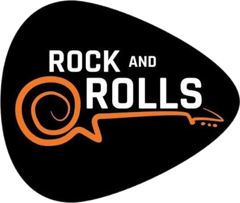

Cuenta 1 por cada serie donde el músculo es principal y 0,5 donde ayuda. La raya marca la meta de 10 series por semana.
Mide siempre igual: en ayunas, lado izquierdo, músculo relajado y cinta sin apretar. Bíceps con el brazo caído; cintura a la altura del ombligo; cuádriceps a mitad del muslo. Puedes dejar campos vacíos.
Se guardan en la nube con tu cuenta de Google. Solo tú puedes verlos.
Descarga tus registros cada cierto tiempo. El archivo CSV se abre en Excel o Google Sheets; con el archivo JSON puedes restaurar todo aquí si algún día hace falta.
Cómo progresar: trabaja cada serie a 1–2 repeticiones del fallo. Cuando completes todas las series en el tope del rango con buena técnica, la próxima vez sube el peso (la etiqueta naranja te lo indica). Si algo molesta en la zona lumbar, para ese ejercicio y consúltalo con tu médico o fisioterapeuta.
En los ejercicios con barra, anota solo el peso de los discos de cada lado (sin contar la barra). Sin discos = 0.
Imágenes: Free Exercise DB (dominio público).